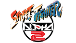
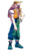
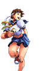
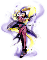
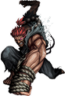
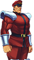

Street Fighter Alpha (1995–1998)
The Alpha series bridges the story between the original Street Fighter and Street Fighter II, with a bold anime art style, faster movement, and deeper combo and super systems.


The Alpha series bridges the story between the original Street Fighter and Street Fighter II, with a bold anime art style, faster movement, and deeper combo and super systems.





